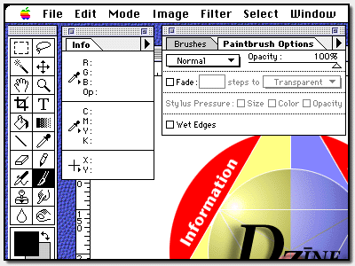
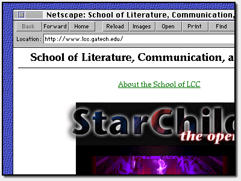
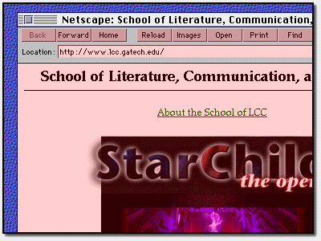
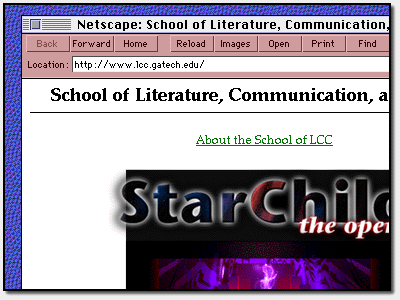
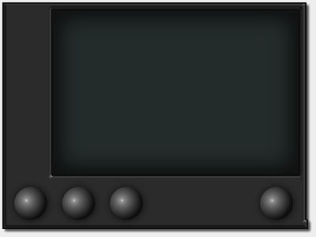
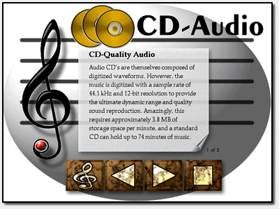
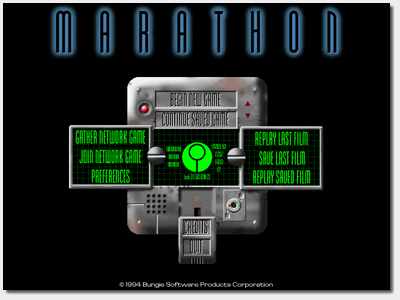
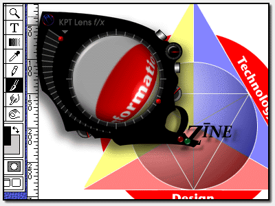

Interactive Screens
Uniting Depth and Surface
As computer use becomes more wide-spread,
usability becomes an increasing concern. Usability
addresses issues such as learnability, intuitiveness, usefulness,
efficiency, and cultural appropriateness of computer software.
Specific guidelines have been created by individuals such as
Jakob Nielsen
that define the balance that a designer must negotiate when
attempting to satisfy the requirements of usability. These days,
the importance of usability can be seen just in the number of
names it has: ergonomics, HMI (human-machine interface),
HCI (human-computer interaction), CHI (computer-human interaction),
UCD (user-centered design), HF (human factors), and UID (user
interface design), to name a few. In this article, I will often
use the phrase "interface design" interchangeably with "usability."
Interface design consists primarily of two halves:
designing displays, and designing human interactivity.
The main objective of display design is typically to create
transparent views into the information space being accessed.
It is important that the frame--everything that is used to
display and contextualize the information--does not distract
the user from the information itself. In short, display design
is about creating transparent windows into the information space
that emphasize the depth of the space, not the surface and frame
of the display. The primary goal of designing human-computer
interaction, on the other hand, is to create opaque objects that
map the information space and afford direct manipulation that
guides and constrains human interactions to reduce the memory
load on the individual. In this case, the emphasis is on the
interactions between the user and the frame and how they can
manipulate the information.
One might notice that these two sides of interface design parallel
the dichotomy characterized by the differences between early
Italian perspective painting and Dutch modernist art--the opposing
forces of transparency vs. opacity, window vs. map, and depth vs.
surface. In the genealogy of visual representation, user interface
design is breaking new ground by uniting many of the characteristics
that are traditionally opposed. Interactive screens are uniting
depth and surface.
The Desktop Metaphor
For years, user interface design of computer software has moved to embrace the notion of the Graphical User Interface (GUI). In most cases, GUI's take the form of a windowing environment--one that provides multiple windows or views into the information space that the software accesses. Some common examples are the Macintosh Operating System, Microsoft Windows, and X Windows for UNIX. In all three cases, the metaphor of a desktop is used in which the surface of the screen represents the surface of a desk, upon which may be placed items such as documents, folders, and tools.

Figure 1. Overlapping windows atop a blue textured desktop.
The central component of GUI's, the window, is an element of depth.
Each window opens into the potentially infinite universe of the
information space. While many applications, such as word processors
and spreadsheets, tend to have very flat information spaces, other
applications like 3D modelers can literally have almost
infinite depth. Windows primarily serve the display aspect of
interface design, providing transparent views into the depths of
the information space.
The desktop itself, however, is primarily surface oriented. It serves
the interaction aspect of interface design in that it provides a way
of manipulating and organizing the collection of windows. Relative
to the desktop, the windows themselves become the information space.
The frames around the windows are the opaque objects that can be
seized and dragged about. The desktop has only a limited sense of
depth in that the windows may overlap and are sometimes adorned
with bevelled edges. But all of this is done to augment the sense
of surface--surface that can be grabbed and manipulated.
When viewing this standard kind of graphical interface, one
merely needs to change one's focus to switch from a depth-oriented
to a surface-oriented visual representation. With a simple change
of mental context, the windows can become merely objects scattered
across the surface of the screen. Switch back, and one is peering
into the deep void of another information space. And all along,
nothing on the screen has changed.
Layers of Interactivity
Early GUI interfaces tended to be very flat, like the example windows shown in Figure 1. The sense of depth was derived almost solely from the overlap of the windows. Except in a few applications whose specific purpose was to display 3D representations, a majority of the tools and controls within a window tended to have no overlapping areas, lighting effects, or drop shadows. More recent GUI designs, however, have begun to incorporate layers of depth within the window, which correspond to the levels of interactivity they provide. The Netscape web browser shown below, for example, demonstrates this sort of design.

Figure 2. Netscape web browser.
The browser shows three distinct layers of interactivity. The top layer, emphasized in Figure 3 below, corresponds to buttons. No other controls appear at this level. As the highest controls on the window, they naturally encourage direct manipulation--interaction focused directly on the object itself.
Figure 3. Top layer of interactivity: buttons.
On the middle layer (shown in Figure 4) appear labels and other non-interactive components. This layer, sandwiched between the higher and lower levels is intuitively the most neutral, the most inert. It does not encourage interactivity as do the other two layers, but does serve a mapping function by labelling and categorizing the information spaces.

Figure 4. Middle layer: labels and non-interactive components.
On the bottom layer appear all of the interactive components that are not buttons. For example, in the figure below, the Location text field and the web page itself appear on this third layer. The bottom layer, one could argue, would tend to discourage any sort of direct manipulation such as with the pointing device. However, it can also be argued that the depressions in the window serve as wells or pools, attracting information content. And in fact, it is often in these information pools that you find the bulk of the content of the window.

Figure 5. Bottom layer of interactivity: text fields and
interactive screens.
What is particularly interesting about these layers of interactivity is that the top two layers, those of buttons and labels, form a sort of frame within the frame of the window. The bottom layer, containing the information pools, tends less to provide frames and more to provide views. In other words, the higher layers provide the direct manipulation and maps for manipulating, organizing, and conceptualizing the information, while the lowest level provides the transparent views into the information spaces, paralleling the relationship between windows and the desktop.
3D Consoles
In games and multimedia software, where there is less emphasis on
rigid user interface standards, thus providing greater freedom to
work with the aesthetics of a piece, there is a strong movement
toward 3D console-type interfaces. These interfaces are continuing
to blur the lines between window and frame.
For example, in Figure 6 below, the
application recreates the likeness of a computer screen within
its own frame. Although this technique still parallels the
window-desktop relationship, it draws more attention to the
console screen as a surface as well as a window.

Figure 6. Faith multimedia project incorporating a 3D console.
The various interface components of the Multimedia Music application shown in Figure 7, are still divided in a relatively traditional manner between window and frame. However, it is far more difficult to distinguish one from the other. In fact, much of the "frame" in this case (everything surrounding the curled sheet of paper), is itself a window onto another broader information space that contextualizes the information that appears on the paper.

Figure 7. Multimedia Music "CD-Audio" page with several layers
of depth.
In the third example, below, the distinction between window and frame has been all but removed. The object and the information are united, mapped and displayed simultaneously. The display itself is the object to be manipulated.

Figure 8. Marathon video game utilizing a 3D console.
While some of the most advanced work in breaking down the dichotomy between window and frame is taking place in multimedia and game development, that is not to say that these new united ways of representing and interacting with visual information spaces will not begin to trickle into the standard applications market. In fact, the Kai Power Tools 3.0 MetaToys device shown in Figure 9 demonstrates one of the most advanced user interface designs in which the object that is manipulated and the view that it affords are entirely united. In the image below, both the traditional windows and desktop are literally left in the shadow of the future of user interface design.

Figure 9. Kai Power Tools 3.0 "MetaToys" device.
Conclusion
Computer use brings one very important characteristic to the genealogy of visual representation--interactivity. Few media have relied so heavily upon the action of the user or viewer as do digital media. As a result, interactivity has become a driving force behind the movement toward new forms of visual representation that attempt to balance transparent displays of information with opaque objects that facilitate the mapping and manipulation of these information spaces. In essence, the requirements of usability are driving interactive screens to unite depth and surface.
Last modified 4/26/97.